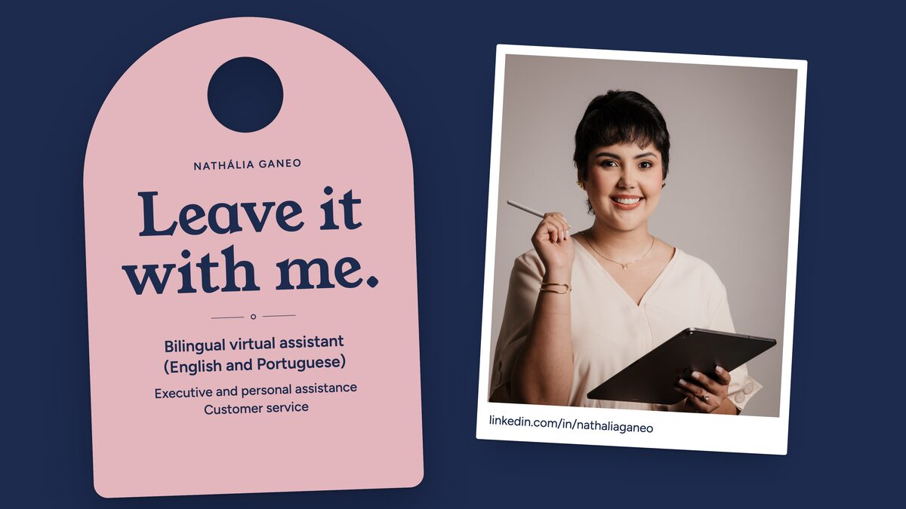

Leave it with me.
I look after patients for clinics and private practices, from the first message to the confirmed appointment, and I run the day for business owners, from the calendar to email and travel. I follow every task through until it's done.
Chat on WhatsAppOur first chat is simply me getting to know your routine.

Updates you'll be glad to get
- Appointments
Good morning! Tomorrow's appointments are all confirmed, and the patient who asked to reschedule already has a new time.
- Calendar
Today's calendar is all set, and I've picked out your three priorities for the morning.
- Patients
I've answered your patients' messages. Only one needs you, and I've left you a short summary.
- Travel
Your accommodation for the trip is booked, and this month's expense sheet is up to date.
Examples of the updates you get throughout the day.

Who's on the other side of your messages
I'm Nathália Ganeo, a Virtual Assistant. I work remotely, in English and Portuguese, across two areas with equal weight: front desk support for clinics and private practices, with a special focus on aesthetics, and executive assistance for business owners and their day-to-day organization. With my advanced English, I also proofread and translate texts between Portuguese and English.
My way of looking after people took shape before my first client. For my final thesis in Advertising, I chose to study customer delight in the Disney model, and I bring that same care to every conversation.
Before becoming a Virtual Assistant, I was already handling admin and customer service. At my family's property management company, I help with banking, contracts, receipts and invoices. And at the sustainable fashion store I co-owned, all customer service was online, through social media and WhatsApp Business.
I'm proactive, detail-oriented and reliable, and I see every request through to the end. When something comes up that I haven't done before, I study it, find the right resources and deliver.
People should leave a conversation calmer than they came in.
That's what I take from my study of customer delight into every interaction, whether with you or with your patients and clients. Day to day, it comes down to three habits:
Answering clearly, without leaving doubts along the way.
Looking at the person and their problem, not just at a ready-made script.
Following the conversation through to a solution, not just to the first reply.
Four services, the same care
Front desk support for clinics and private practices, executive assistance for business owners, customer service for fashion and beauty stores, and text proofreading and translation. You can start with one and add another when it makes sense.

HighlightAesthetic clinics
I look after the front desk, you look after your patients.
Patients well looked after
Everyone who contacts your clinic gets an attentive, clear reply, and you don't have to live with your phone in your hand.
In practicePatient messages on WhatsApp and social media, from first contact to resolution.
Appointments always up to date
Every appointment is booked, confirmed or rescheduled without you having to stop seeing patients.
In practiceBooking, confirming and rescheduling appointments.
Reminders and follow-up
Patient care starts before the appointment and continues after it.
In practiceA reminder before each appointment and a follow-up message afterwards.
Common questions, your way
Treatments, opening hours, prices, preparation and directions, answered in words you've approved.
In practiceReplies agreed with you for the questions that come up most.
End-of-day summary
At the end of the day, you know what's been handled and what still needs you.
In practicePatient records, spreadsheets and documents kept in order, confidentially: your patients' information stays with you.

I look after the routine, you look after the business.
Calendar and priorities
You start the day knowing what needs you and what's already in motion.
In practiceCalendar, appointments, priorities and to-dos, with daily follow-up.
Email and meetings
Your inbox stops deciding how your day goes.
In practiceManaging your email and keeping track of your meetings.
Travel and accommodation
All you have to think about is packing.
In practiceResearching and booking accommodation for your trips, in hotels or on Airbnb.
Expenses, documents and reports
When you need a figure or a receipt, it's right where it should be.
In practiceExpense spreadsheets, reports and documents kept in order.
Routine and research on request
Work and life fit into the same week, and the information you need to decide arrives organized.
In practiceOrganizing your work and personal routine, and on-demand research.
I look after the conversations, you look after the store.

HighlightFashion & beauty
Before looking after your store, I had my own.
All customer service was online, through Instagram and WhatsApp Business, and I was the one answering every customer. Every conversation answered with care was a chance for that person to come back.
I love fashion, beauty and makeup. For your clothing, makeup or beauty store, I handle every conversation on Instagram Direct and WhatsApp, from the first hello to after-sales care.
DMs and WhatsApp, always up to date
Everyone who messages your store gets a quick, attentive and clear reply, and no message gets forgotten.
In practiceCustomer service on Instagram Direct and WhatsApp Business, from first contact to purchase.
Sizes, exchanges and common questions
Measurements, colors, delivery times and exchanges, answered in words you've approved, and anyone unsure gets help choosing the right size.
In practiceReplies agreed with you, from the size chart to the exchange policy.
Orders followed through
Every order is noted and followed up, and the customer hears from the store at every step.
In practiceOrders kept organized, plus an end-of-day summary of sales in progress and what still needs you.
After-sales care
A message after the purchase shows you care and leaves the door open for next time.
In practiceAfter-sales messages and exchange follow-up, in your brand's tone.
I look after the words, you look after the message.
Proofreading
Your text, in English or Portuguese, comes back clear, correct and in the tone you want.
In practiceEmails, messages, documents, presentations and song lyrics.
Translation
Portuguese into English, or English into Portuguese, reading naturally and never like a machine translation.
In practiceEmails, client messages, documents and marketing materials.
“Excellent professional. The English lyrics review for my song was delivered very quickly (the same day) and exactly as I requested. Recommended.”
- English and PortugueseCertified advanced English (EF SET, C1 level).
- Remote workFrom Campo Grande, Brazil, to wherever you are, with the tools you already use.
- 9 a.m. to 6 p.m.Hours that adjust easily to each client's needs.
I also offer online event coordination: help planning events, organizing bridal showers and other celebrations, creating games and scripts, and taking care of the details.
From the first hello to everyday support
Four steps, from our first conversation to a routine that runs itself.
Step 1: We talk.
You tell me about your routine, or your practice's, and what takes up most of your time, on WhatsApp or on a video call.
Step 2: You get a tailored proposal.
I show you what I'll take on, how we'll keep in touch and the format that suits you: hourly, a monthly package or a one-off project.
Step 3: I set up the start.
We sort out access and communication channels. I adapt to the tools you already use and start with whatever weighs on you most.
Step 4: You stay in the loop without chasing.
You hear what's done and what needs your attention without having to ask, and we adjust the routine as your needs change.
Day to day, I use Google Workspace (Calendar, Sheets, Docs and Meet), Excel, Word, Zoom and WhatsApp, and I pick up each client's tools quickly.
How I got here
- Current
Independent Virtual Assistant
I support a business owner who runs two companies, handling his day-to-day work and personal tasks: accommodation bookings, documents, expense spreadsheets and research on request. I also organize the work and personal routine of a personal assistance client, with daily follow-up.
- Current, part-time
Santos Ganeo Cia LTDA
My family's property management company. I help with customer service, banking and contract matters, receipts and invoicing.
- 2023
Não Canso de Brechó
My own sustainable fashion store, co-owned with a partner. I handled customer service, entirely online, through social media and WhatsApp Business.
Education
- Degree in Advertising (2015 to 2018), with a final thesis on customer delight in the Disney model
- Administrative Assistant, Senac (2015)
- Advanced English, EF SET certificate, C1 level (2025)

People who've left their routine with me
Words from real clients, published with each person's permission.
[TESTIMONIAL]
[TESTIMONIAL]
A closer look at my work
My portfolio sums up what I do and how I work in a few pages, and the certificate shows my level of English.

Portfolio (PDF)
My services, the way I look after people and what working together looks like, to read at your own pace or share with whoever decides with you.
Download the portfolio (PDF)Certified advanced English
EF SET, C1 level, July 2025.
Frequently asked questions
Something else on your mind? Message me on WhatsApp.
How does working with a Virtual Assistant work?
Everything is done remotely. We agree on the tasks, the communication channels and the hours, and I take care of the day to day, with updates on what's been done.
What are your hours?
From 9 a.m. to 6 p.m. And those hours adjust easily to each client's needs: just tell me how your day runs.
How do you handle confidentiality?
Your patients' and clients' information stays with you. We agree on access and communication channels together, and I work with the tools you already use.
Do we need to be in the same city?
No. The work is fully remote, so we can work together wherever you are.
How is pricing set?
Every proposal is tailored: hourly, a monthly package or a one-off project, depending on what you need.
Do you work in English?
Yes. I have certified advanced English (EF SET, C1 level), I work in both English and Portuguese, and I also proofread and translate texts between the two languages.
Which tools do you use?
Google Workspace (Calendar, Sheets, Docs and Meet), Excel, Word, Zoom and WhatsApp. And I adapt to the tools you already use.

Hi Nathália! I found your website and I'd like to talk about what I could hand over to you.
You can still change the text in WhatsApp before you send it.
- WhatsApp(67) 99823-4242
- Emailnathganeo@gmail.com
- LinkedInlinkedin.com/in/nathaliaganeo
- Hours
9 a.m. to 6 p.m., adjusted to your routine